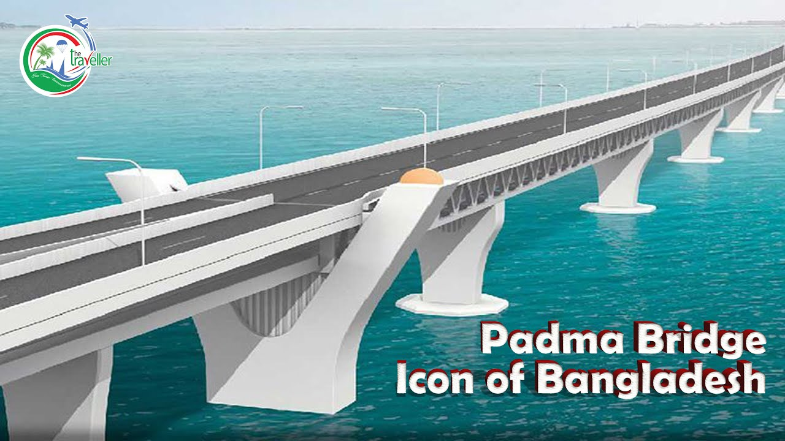

Bangladesh 2.0
Idea , innovation ,
vision and challenges in
New Bangladesh.

The Vision of Future
Bangladesh 2.0 aims to redefine the nation’s trajectory by embracing cutting-edge technology, promoting inclusive growth, and ensuring sustainability. With initiatives in renewable energy, digital transformation, and robust infrastructure, the country is set to become a global model of development.
Digital Transformation
Creating a nationwide digital ecosystem to enhance connectivity and access to services for all citizens.
Green Energy
Investments in solar and wind energy to ensure a sustainable and eco-friendly future.
Modern Infrastructure
Building state-of-the-art infrastructure to support economic growth and global competitiveness.
"Money begets money. If you don't have that, you wait around to be hired by somebody at the mercy of others. If you have that money in your hand, you desperately try to make the best use of it and move ahead."
Dr. Muhammad Yunus Chief Adviser of the People's Republic of Bangladesh
Recent News
Bangladesh 2.0 aims to redefine the nation’s trajectory by embracing cutting-edge technology, promoting inclusive growth, and ensuring sustainability. With initiatives in renewable energy, digital transformation, and robust infrastructure, the country is set to become a global model of development.

Bangladesh Create Padma Bridge
The Padma Bridge connects the southwestern region to the rest of the country, boosting economic growth and reducing travel time significantly. This multipurpose bridge accommodates both road and rail traffic, enhancing connectivity and trade. The construction faced challenges, including financial and environmental hurdles, but it stands as a testament to Bangladesh's resilience and progress. The Padma Bridge symbolizes national pride and is expected to contribute to GDP growth by improving transportation, trade, and regional integration.
Bangladesh Launches New Satellite

Not until the creation and maintenance of decent conditions of life for all people are recognized and accepted as a common obligation of all people and all countries—not until then shall we, with a certain degree of justification, be able to speak of humankind as civilized
Donate Today
Bangladesh 2.0 aims to redefine the nation’s trajectory by embracing cutting-edge technology, promoting inclusive growth, and ensuring sustainability. With initiatives in renewable energy, digital transformation, and robust infrastructure.
Subscribe Newsletter
Bangladesh 2.0 aims to redefine the nation’s trajectory by embracing cutting-edge
technology, promoting inclusive growth
We promise not to spam you!